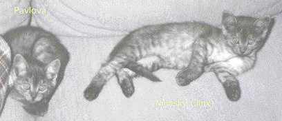
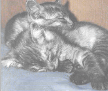
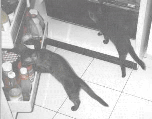
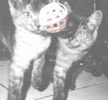

Reich-Weiser Kittens
Nijinksy and Pavlova
Jinx and Pav are nearly identical twins, but male and female. The first picture is solved for you. Can you tell who is who in each of the others? (It is possible, given the clues given here, both behavioral and appearance.)
Click on the pictures for bigger, better versions of same.




page by Mark Weiser (weiser@ubiq.com) / January 11, 1995